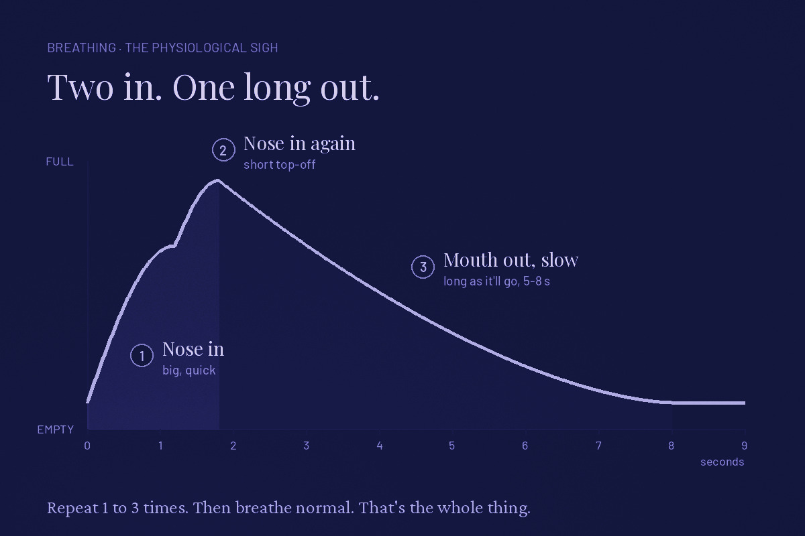

Don't think about it too hard. That's the whole problem. Find the row that sounds like you and go.
The physiological sigh

Your body already does this. You do it in your sleep. Kids do it at the end of a hard cry. You're just doing it on purpose.
It's the quickest thing on this page. One round takes about ten seconds. Most of the time, one to three rounds is the whole job.
- Inhale through your nose. A big, quick one. Fill up most of the way.
- Inhale again through your nose. Short and sharp, right on top of the first. Top off the tank. It'll feel like there's no room. There's a little.
- Exhale through your mouth, slow. Let it run as long as it'll go without forcing it. Five to eight seconds is good. Lips loose, like you're cooling coffee.
- Repeat one to three times. Then just breathe normal. Don't chain twenty of them together. You'll get lightheaded and annoyed.
If you've got more time, do it for five minutes straight, easy pace, nothing forced. One small study out of Stanford had people do five minutes of this a day, and it moved mood more than the same five minutes of meditation. Small study. I'll take it.
When to use it
- Before a hard task. The call you don't want to make. The email you've been dodging for three days.
- Right after a jolt. Somebody cuts you off, the boss says "got a minute?", the bank app loads.
- In the truck at a red light. Eyes open. Nobody can tell. You look like a man who's had it, which you are.
- Before sleep, a few rounds on your back. Then switch to longer out than in.
- When you notice you've been holding your breath. You have. Check right now.
If it goes wrong: lightheaded means you're pushing the inhales too hard. Ease off. Nose stuffed? Two quick sips through the mouth works. The exhale is the part that counts.